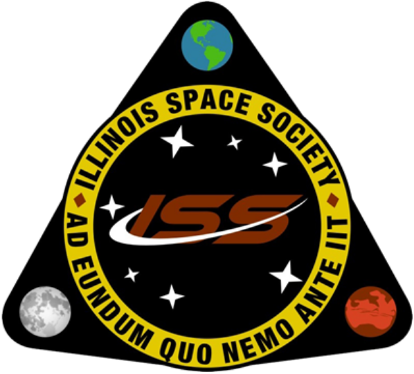
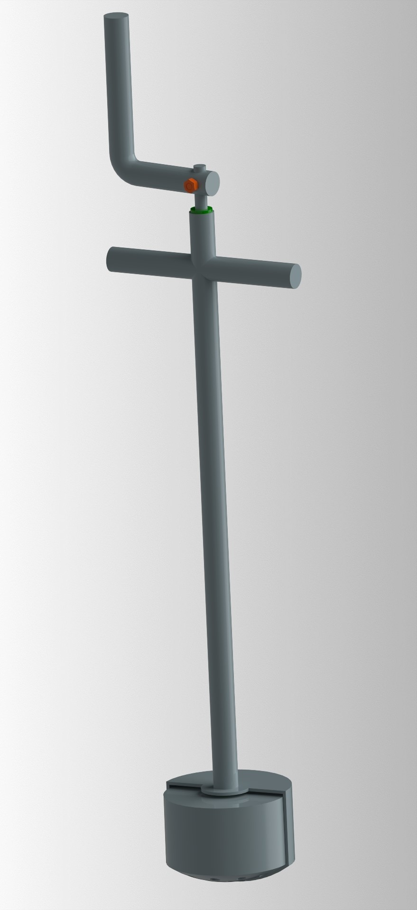

Technical Teams

Throughout my time at UIUC, I have had the pleasure of working on many technical teams inside and outside of my classes. This page highlights my experiences outside a structured learning environment. So far, this mainly includes my encounters with the Illinois Space Society (ISS), detailed below. Jump down to The Future section to read about teams I am joining for the current semester!
Illinois Space Society (ISS)

Space Grant (Fall/Spring 2018/2019)
This team competed in the 2018-19 NASA Space Grant Midwest High-Power Rocket Competition. It was my first technical team with Illinois Space Society and an experience that offers many fond memories. I was involved on the structures team, creating and attaching carbon-fiber laminated fins. The challenge of the competition was to build a rocket that would efficiently reach super-sonic speed. We ended up taking 2nd overall in the event! This was after losing our rocket entirely during our initial test launch and rebuilding it in a 2-week time period. This group taught me that sometimes the best way to learn is to jump in head-first, and that with a good team, it is very possible to bounce back in the face of adversity.
Micro-G (Fall/Spring 2019/2020)
 Starting my sophomore year, I was a part of ISS's team that took
part in NASA's Micro-G NExT 2019-20 Challenge. We chose to design a dust-tolerant tool that would pick up moon rock samples. Throughout
this year I learned the process of designing something in a team environment. We initially deliberated on ideas and eventually narrowed
it down to couple options. We then learned the importance of low-fidelity prototypes: the ability to quicky test an idea to see if it
functions as intended.
Starting my sophomore year, I was a part of ISS's team that took
part in NASA's Micro-G NExT 2019-20 Challenge. We chose to design a dust-tolerant tool that would pick up moon rock samples. Throughout
this year I learned the process of designing something in a team environment. We initially deliberated on ideas and eventually narrowed
it down to couple options. We then learned the importance of low-fidelity prototypes: the ability to quicky test an idea to see if it
functions as intended.
After choosing a a final design, we got to work CADing the tool itself. Then began the process of finding manufacturer's in the area to machine parts. At about this point, COVID-19 struck the nation. This meant I would be home for the rest of the semester. However, thanks to some awesome teammates, the group was able to finish assembling and testing the Lunar Exploration Tool, or "LETo." It was exciting to see our finalized project being used at NASA's Neutral Buoyancy Laboratory by test engineers.
Student Launch (Fall/Spring 2019/2020)
This team competed in NASA's 2019-2020 Student Launch competition. This year our plan was to deploy a drone mid-flight that would be able to travel to a specified area and retrive an item. It sounded so bizzare and straight out of a science fiction film. This experience was yet another example of me realizing that goals that can be accomplished when everyone is working towards the same goal. I had joined the team fairly late, but I was still able to help with some primitive software-in-the-loop simulations. This was my first time hearing the word and learning the process. Essentially, we made a computer think it was reading sensor data from an actual drone flight. In reality, the whole thing was simulated. This was my first foray into the simulation program Gazebo as well. Unfortunately, COVID-19 essentially cancelled the event, and subsequent work halted within most of the teams. It was still an experience that taught me many new technical skills.
The Future (Fall 2021 Semester)
Spaceshot (Fall 2021)
Spaceshot is a long-term Illinois Space Society team. The goal is to build and launch a rocket that reaches space, which is about 100,000 meters in the sky. This is its first semester in progress and is predicted to continue for about 2-3 years. The group is planning on many sub-scale launches before the real deal. I will be assisting the software team, which handles data acquisition, telemetry, and manipulation of the rocket's trajectory. The team is also developing SILSIM, an internal software-in-the-loop simulation utility that will test software logic in virtual rocket launches. This works by having the computer think it is reading sensor data or forces from an actual rocket launch. However, those readings are being created by a seperate part of the simulation. This allows the software team to test parts our code without attending an actual test launch, specifically the code concerning data storage and state estimation.
Illinois Robotics in Space or IRIS (Fall 2021)
Illinois Robotics in Space is a technical team dedicated to competing in the NASA Lunabotics 2022 competition. As a team, we will build a rover capable of navigating the rough Moon surface, mine material, travel back to the starting zone, and properly dump the mined gravel. I will be a part of the autonomous team. Here, I will help code software that will recognize obstacles and plan a path for the robot to travel in. The team is hoping to use the simulation program Gazebo to simulate the rover, which I will also be helping with.